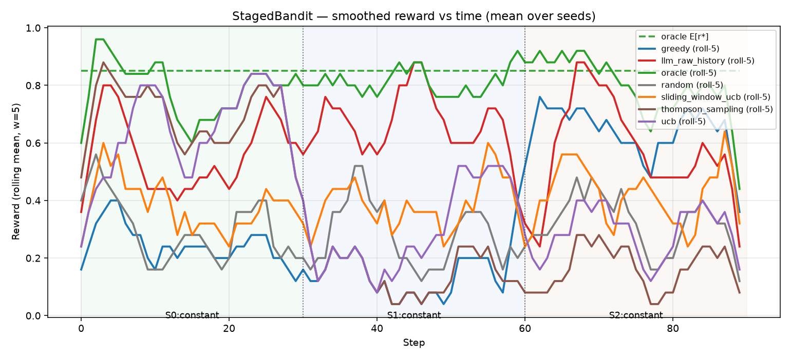
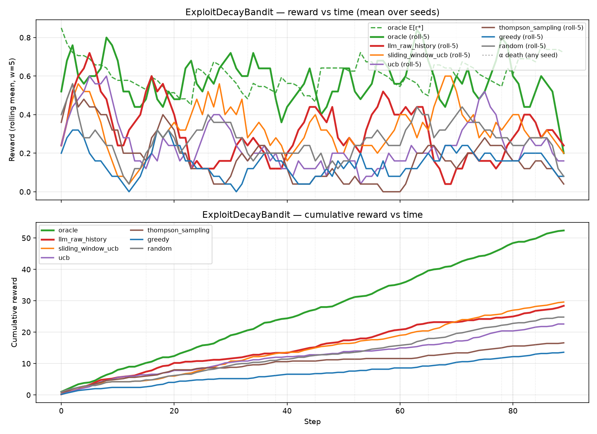
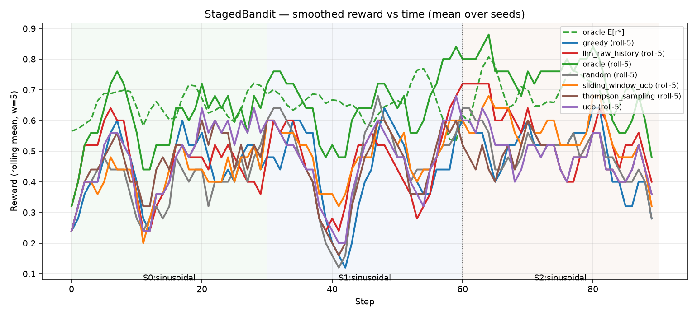
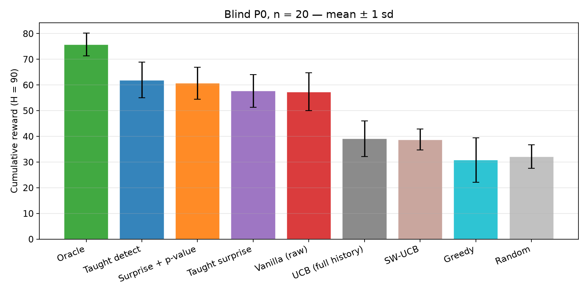
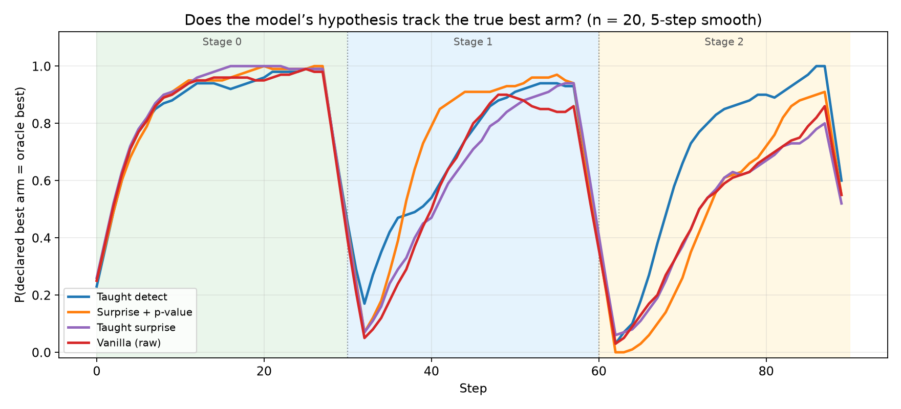
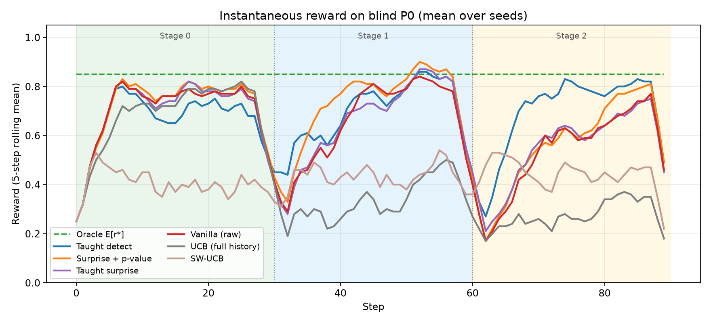
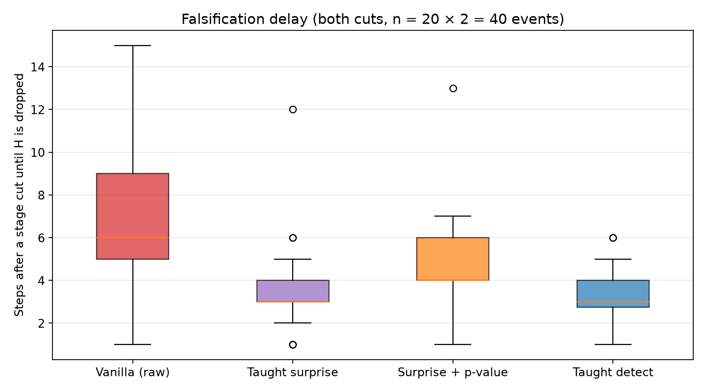
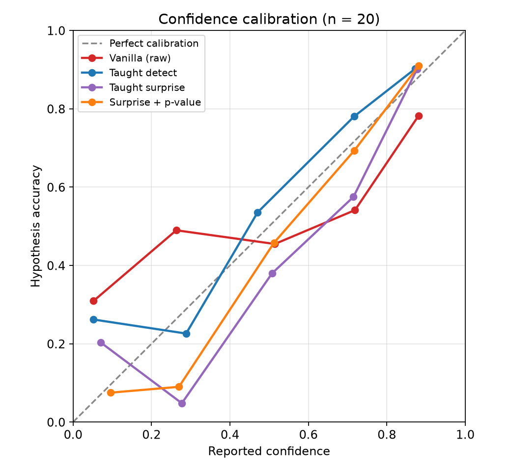

Date: 24 August 2026
Project: LLM + time (SpaceHunterInf/llm-time)
Model: Gemini 3.5 Flash, temperature 0, weights frozen
This note: self-contained. No need to have read the code.
We are not trying to beat UCB at bandits. We are using a tiny non-stationary bandit as a microscope for a more general loop:
Form a hypothesis → assign confidence → act by a heuristic → falsify when the world changes → form a new hypothesis.
On a clean “the best arm flips every 30 turns” task (we call it P0), with 20 seeds:
Punchline: they can form H. Falsification is teachable as English. Harvesting the new arm is the hard part, and it is not the same skill as noticing that 100 heads is weird.
A lot of “LLM as agent” work asks: can it get a high score? We want a more specific object.
A frozen model (no gradient steps, no gold labels, no multi-episode memory) plays a long episode. The only learning channel is the prompt filling up with its own actions and rewards. Can it:
If it already does this, we quantify delays (lock / falsify / re-lock) and calibration.
If it does not, we teach — in English, or with a number in the observation — and see which part of the loop moves.
Bandits are the first microscope, not the identity of the project. The same JSON loop should later transfer to one other long-horizon task.
This is in-context hypothesis revision under non-stationarity, not “build a better UCB.”
Think of a Gym loop. Horizon H = 90 steps. Each step:
{"arm": k}.The LLM is prompted with (depending on condition) a stats table and/or the raw transcript, and must return one JSON object. The environment only executes action. The other fields are process evidence.
{
"hypothesis": {"type": "best_arm", "best_arm": 2, "stable": true},
"confidence": 0.8,
"heuristic": "exploit_best",
"heuristic_text": "pull the arm with the best recent mean",
"action": {"arm": 2},
"rationale": "..."
}
| Setting | Value |
|---|---|
| Model | gemini-3.5-flash |
| Temperature | 0 |
| Training | none (frozen) |
| Fair task text | blind — no “probabilities may change” |
| Seeds for the main claim | 20 (earlier map was 5) |
| Parallelism | 8 episodes at a time; steps inside an episode stay sequential |
Baselines (no hypothesis fields): random, greedy, UCB1 on the full history, sliding-window UCB (window 10), and an oracle that always pulls the current best arm.
Why UCB is the important foil. UCB1 is optimal for a stationary bandit. On P0 it is a stubborn full-history mean: after a flip, the old winner still has a huge n and looks best. Sliding-window UCB is the classical “forget” baseline.
A 4-arm Bernoulli bandit whose best arm jumps on a calendar, with no announcement.
Steps 0–29 Stage 0 one arm has p ≈ 0.85, others ≈ 0.20
Steps 30–59 Stage 1 a *different* arm is the 0.85 arm
Steps 60–89 Stage 2 a third arm is the 0.85 arm
Oracle expected reward is ~0.85 in every stage. The difficulty is not “the ceiling moved.” It is your theory about which arm is best just died.
We also ran two harder cousins (still n = 5, action-level only):
| Cell | What changes | Point |
|---|---|---|
| P0 | 3× constant, distinct best arms | Discrete hypothesis you can check |
| P1 | sinusoid → constant → linear | Cross-family |
| P2 | 3× sinusoid | Soft, no stable “best arm” to lock |
| P0-long | P0 but H = 180, 6 stages | Is context length the failure mode? |
| ExploitDecay | Pulling the current winner lowers its p; a new winner spawns | Self-caused death; opposite of greedy |
Fair comparisons use blind prompts. An “aware” prompt that says the world may change is an ablation, not the main claim.
Before the JSON loop, we only scored pulls. Blind Gemini vs classical:
| Task | LLM (blind) | UCB | SW-UCB | Oracle | Read |
|---|---|---|---|---|---|
| P0 (H = 90) | 52.0 | 37.4 | 36.2 | 73.0 | LLM >> stubborn UCB |
| P1 | 40.4 | 37.8 | 33.4 | 58.8 | modest edge (the constant block) |
| P2 | 44.2 | 43.4 | 44.4 | 60.2 | no edge on pure sinusoids |
| P0-long (H = 180) | 112 | 67 | 78 | 151 | edge held (74% of oracle) |
| ExploitDecay | 28.4 | 22.6 | 29.6 | 52.4 | first hardness cell; LLM overmines (~49% vs SW-UCB 16%) |
Telling the model “regimes change” (aware) is not required for the P0 win. On P0, blind was 52.0 vs aware 50.4. Coaching mainly cuts overcommit; it does not create the skill.
P0-long answers “is 90 turns a gift / does the prompt get too long?” Length alone did not break action-level adaptation. Late stages were if anything better than early ones.
ExploitDecay is the complementary hardness: the right heuristic is leave a good arm before it dies. Vanilla Flash overmines. This is the natural transfer test for anything we teach on P0 (a recency-greedy rule should hurt here).
Figure 6 is the original P0 action-level picture: the LLM (red) recovers after flips; full-history UCB (purple) and Thompson lock Stage 0 and never come back.

Figure 6. Blind P0, n = 5, raw-history LLM (no hypothesis schema yet). Rolling reward vs time. Green dashed = oracle expected reward (~0.85). Purple UCB collapses at the first cut and stays down. Red LLM drops, then climbs again.
Figure 7 is ExploitDecay: greedy/UCB/Thompson finish below random. SW-UCB and the LLM are close to each other and far from oracle.

Figure 7. ExploitDecay, n = 5. Bottom panel is the readable one: cumulative reward. Oracle ~52, SW-UCB ~30, LLM ~28, random ~25, UCB ~23, greedy ~14.
Figure 8 is P2 (three sinusoids): everybody is in a heap. That is a soft fail, not a scoop of “LLMs cannot adapt.”

Figure 8. P2, n = 5. Soft non-stationarity; LLM ≈ SW-UCB ≈ UCB. We stopped adding sinusoid variants.
Action reward cannot tell form H from lucky habit. So we forced the schema in §2 and defined:
| Metric | Meaning |
|---|---|
| Lock time | Steps until declared best_arm matches the oracle best for 3 consecutive steps, per stage |
| Falsification delay | After a cut at t = 30 or 60: steps until the hypothesis leaves the old best, or stable = false |
| Re-lock time | After that, steps until it matches the new best for 3 steps |
| Calibration | Among steps with confidence in a bin, how often H is actually correct |
We also ablated what the model sees (no tools):
| Interface | Contents |
|---|---|
| R raw | Full action–reward transcript |
| S stats | Engine tallies: per-arm n, lifetime mean, last-10 mean |
| S+R | Stats table + last 10 raw steps |
Stats are only what a human could count from the same pulls. No hidden p, no best_arm leak.
n = 5 ablation (for context, not the main claim): raw was the strongest untaught condition; stats-only could entrench a lifetime-mean H. Teaching detect needed the recency columns.
Same env (blind P0), same JSON, same model. Only the English (and one extra number) change.
Schema only. Full raw history. No “the world changes,” no recency rule.
This is “what does Flash invent?”
Still blind about whether the world changes. But we install a detector:
mean_w (last 10 pulls of an arm) over lifetime mean_all when they disagree.stable = false, lower confidence, try another arm.best_arm is stable.This can win by being the right sliding-window rule for piecewise-constant P0.
Same stats table on screen. Does not name mean_w, collapse, or regimes:
stable = false and explore until a new H fits.This is the “100 heads → maybe the coin is unfair” instruction, without handing over the window statistic.
Same surprise English, plus an engine block:
last hypothesis: arm 3
p_hat (lifetime mean of that arm): 0.680 (n=25)
last 5 pulls of that arm: 0,0,0,0,0 (0/5 successes)
P(this many successes or fewer | Bernoulli(p_hat)): 0.0034
That probability is not the hidden reward rate. It is a one-sided binomial tail under the model’s own lifetime mean of the declared arm. The question: if we compute the coin-test for them, do they keep stable = false, or still restore H because n is large?

Figure 1. Mean cumulative reward ± 1 sd, H = 90, n = 20. Oracle 75.8. Taught detect 61.9. Surprise + p-value 60.6. Surprise English 57.7. Vanilla raw 57.4. UCB 39.0. SW-UCB 38.7.
| Agent | Reward | vs oracle | H correct | Stage-0 lock | Falsify delay | Re-lock cut 1 / 2 |
|---|---|---|---|---|---|---|
| Oracle | 75.8 ± 4.4 | — | — | — | — | — |
| Taught detect | 61.9 ± 6.9 | 82% | 73% | 4.7 | 3.2 | 9.9 / 11.1 |
| Surprise + p-value | 60.6 ± 6.2 | 80% | 69% | 4.7 | 4.5 | 8.9 / 14.8 |
| Taught surprise | 57.7 ± 6.4 | 76% | 66% | 4.2 | 3.6 | 12.5 / 12.7 |
| Vanilla (raw) | 57.4 ± 7.4 | 76% | 65% | 4.7 | 6.7 | 11.6 / 15.1 |
| UCB | 39.0 ± 7.0 | 51% | — | — | — | — |
| SW-UCB | 38.7 ± 4.1 | 51% | — | — | — | — |
Paired vs vanilla raw (same seeds):
Stage-0 lock is identical (~4.7 steps). Teaching does not help forming the first H. The whole gap is after the world changes.
Vanilla does leave the old H on every cut (40/40 events) and usually re-locks. The failure is slower killing, not never killing.

Figure 2. Fraction of seeds whose declared best_arm equals the oracle best, 5-step smooth, n = 20. All four lock in Stage 0, crash at both cuts. Detect (blue) is the only curve that returns to ~1.0 in Stage 2. Surprise + p-value (orange) is fastest after the first cut. Vanilla (red) and surprise-English (purple) recover more slowly, especially late.

Figure 4. Rolling reward. UCB (gray) is fine in Stage 0 and dead after the first cut. All LLM conditions recover. Detect is the Stage 2 standout.

Figure 3. Steps after a cut until H is dropped. 40 events per box. Detect and surprise-English are fast and tight (median ~3–4). Vanilla is slow and spread (median ~6, tail to 15). Surprise + p-value has a vanilla-like median but a much tighter box — they wait for the engine p-value, then move together.
This is the split to remember:
| Kill old H | Harvest new arm (reward) | |
|---|---|---|
| Vanilla | slow | baseline |
| Surprise English | fast | ≈ vanilla |
| Surprise + p-value | not faster | ≈ detect |
| Detect | fast | best |
Falsification and harvesting are different skills.

Figure 5. Reliability: reported confidence vs how often H is actually correct. Vanilla is overconfident when very sure. Detect and surprise+p-value sit closer to the diagonal at the high end. Surprise-English stays overconfident until the top bin.
Vanilla reports ~0.74 confidence at 65% accuracy. Detect: 0.70 at 73%. They are not well calibrated enough for “confidence = exploration schedule” without more work.
Stage 0’s winner is arm 3. At t = 30 it dies. Three different inner stories.
Taught detect (t ≈ 29). It follows the cookbook and stays off the corpse:
“Arm 3’s recent performance has collapsed with several consecutive 0s… Following the detection rule, set stable false.”
It remains stable = false until arm 1 is the new H.
Taught surprise, no p-value (t = 29). It does the coin test in prose:
“Arm 3 has a high overall mean of 0.68, but its recent three pulls have all been 0. This is surprising (p ~ 0.03) under the hypothesis that it is a 68% reward arm.”
Then at t = 31 and t = 34 it puts stable = true back on, because the other arms also returned 0 on tiny n. Lifetime mean wins the argument. That is why surprise matches detect on falsify delay and matches vanilla on score.
Surprise + engine p-value. Now it cites the number as a reason to stay:
t = 31, engine p = 0.19: “the hypothesis check probability of 0.1926 indicates this is not highly surprising, so [keep arm 3].”
t = 35, engine p = 0.069: finallystable = false, then it locks arm 1 and does not bounce back as hard.
So: handing them surprise does not make them twitchier. It makes the revision stickier, and slower, because they wait until the printed p-value looks small (~0.07, not three zeros).
Two mechanical reasons the engine tail is conservative (not prompt bugs):
p_hat falls and the same zeros look less surprising.| Paper | What they ask | Why we are not scooped |
|---|---|---|
| Krishnamurthy et al., NeurIPS 2024 | Stationary MAB; raw history often fails exploration unless you add summaries / CoT | We ablate raw vs stats; our object is non-stationary falsify / re-lock |
| Monea et al., COLM 2025; Song et al., ICLR 2026 | In-context RL from rewards | Complementary; not hypothesis lifecycle under change |
| Classical CUSUM / SW-UCB / discounted UCB | Algorithms that detect+restart | We are measuring whether an LLM has that loop, and whether English / a likelihood can install it |
| CEO-Bench (Chen et al., 2026) | 500-day SaaS sim, 34 tools, cash as score | Fat “steering” benchmark. Complementary destination, not this microscope |
CEO-Bench’s world is non-stationary (competitor catch-up, preference drift, macro). They do not report lock / falsify / re-lock against an oracle H. We should cite them as a Phase 3-shaped world, not compete as another startup sim.
High confidence
Medium
mean_w, via stickier (not faster) revision.Open (logged as next)
stable = false.mean_w.All main-claim LLM runs: description_mode: blind, K = 4, strong_p = 0.85, weak_p = 0.20, stage_length = 30, H = 90, T = 0, gemini-3.5-flash.
| Name in logs | Prompt | Interface |
|---|---|---|
llm_hyp_raw |
hypothesis_loop.txt (schema only) |
raw history |
llm_hyp_taught_detect |
hypothesis_taught_detect.txt |
stats + last 10 steps |
llm_hyp_taught_surprise |
hypothesis_taught_surprise.txt |
stats + last 10 steps |
llm_hyp_surprise_stat |
hypothesis_taught_surprise_stat.txt |
stats + last 10 + binomial check |
Runs live in runs/2026-08-23_benchmark_p0_hypothesis_* (gitignored). Analyze with:
uv run python scripts/analyze_hypothesis_teach.py
Roadmap with the same numbers: 09_research_roadmap.md §11.
P0 / P1 / P2 prompt ablation (blind / aware / minimal)
| Task | Aware | Blind | Minimal | UCB | SW-UCB | Oracle |
|---|---|---|---|---|---|---|
| P0 3× constant | 50.4 | 52.0 | 56.4 | 37.4 | 36.2 | 73.0 |
| P1 sin→const→linear | 42.2 | 40.4 | 40.6 | 37.8 | 33.4 | 58.8 |
| P2 3× sin | 45.0 | 44.2 | 42.0 | 43.4 | 44.4 | 60.2 |
P0-long (H = 180, 6 constant stages, blind): LLM 112, UCB 67, SW-UCB 78, oracle 151. LLM/oracle = 74% (short P0 blind was 71%).
ExploitDecay: LLM 28.4 (overmine 49%), SW-UCB 29.6 (overmine 16%), UCB 22.6, greedy 13.6, random 24.8, oracle 52.4.